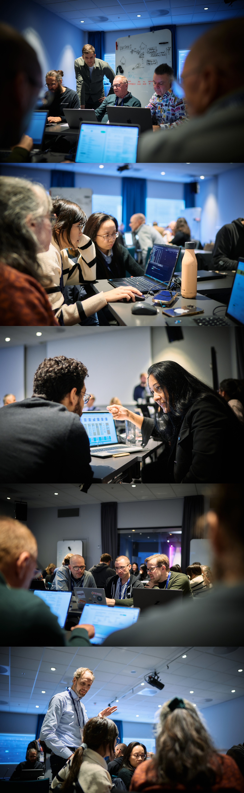

Links: Table of Contents | QA Report
This fragment is not visible to the reader
| Type | Reference | Content |
|---|---|---|
| web | github.com |
|
| web | github.com | Go to ig-mal and follow the instructions |
| web | www.hl7.no |
IG © 2026+ HL7 Norge
. Package hl7.fhir.no.hackathon.2026#1.1.0 based on FHIR 4.0.1
. Generated 2026-08-17
Links: Table of Contents | QA Report |
| web | snomed.info | SNOMED CT Concept Domain Binding |
| web | utviklerportal.nhn.no | NHN Dokumentlager is an implementation of the European Health Data API and can be used for health care providers in Norway to share documents. Currently norwegian municipalities and avtalespesialister are working towards using this infrastructure for document sharing. NHN will provide versions of the NHN Dokumentlager for practical connectivity testing. There will be alternatives with and without authorization. |
| web | ehin.no | Are you ready to make the interoperability solutions of the future? Participate on The Norwegin FHIR Hackathon 2026, a part of EHiN pre-conference. The Norwegian FHIR Hackathon is an arena for creativity, networking and innovation, with HL7 FHIR front and centre. |
| web | www.hl7.no | The Norwegian FHIR Hackathon 2026 takes place at Rebel in Oslo 9. November 2026. The Norwegian FHIR hackathon is hosted by HL7 Norge in cooperation with NHN , Helsedirektoratet , Bedredelt , NoMA , IHE Norge and EHiN . |
| web | www.nhn.no | The Norwegian FHIR Hackathon 2026 takes place at Rebel in Oslo 9. November 2026. The Norwegian FHIR hackathon is hosted by HL7 Norge in cooperation with NHN , Helsedirektoratet , Bedredelt , NoMA , IHE Norge and EHiN . |
| web | www.helsedirektoratet.no | The Norwegian FHIR Hackathon 2026 takes place at Rebel in Oslo 9. November 2026. The Norwegian FHIR hackathon is hosted by HL7 Norge in cooperation with NHN , Helsedirektoratet , Bedredelt , NoMA , IHE Norge and EHiN . |
| web | bedredelt.no | The Norwegian FHIR Hackathon 2026 takes place at Rebel in Oslo 9. November 2026. The Norwegian FHIR hackathon is hosted by HL7 Norge in cooperation with NHN , Helsedirektoratet , Bedredelt , NoMA , IHE Norge and EHiN . |
| web | www.dmp.no | The Norwegian FHIR Hackathon 2026 takes place at Rebel in Oslo 9. November 2026. The Norwegian FHIR hackathon is hosted by HL7 Norge in cooperation with NHN , Helsedirektoratet , Bedredelt , NoMA , IHE Norge and EHiN . |
| web | ehin.no | The Norwegian FHIR Hackathon 2026 takes place at Rebel in Oslo 9. November 2026. The Norwegian FHIR hackathon is hosted by HL7 Norge in cooperation with NHN , Helsedirektoratet , Bedredelt , NoMA , IHE Norge and EHiN . |
| web | fhir.fi | This hackathon is part of the Nordic Health Data Hackathons series. Participation on the hackathon is free of charge. |
| web | vimeo.com | FHIR 101 |
| web | vimeo.com | How to read an implementation guide |
| web | vimeo.com | Newcomer orientation |
| web | fhir.fi | The Norwegian FHIR Hackathon is a part of a Norwegian initiative to host Health Data Hackathons in each Nordic country each year. Please consider attendance on the other Nordic hackathons as well. |
| web | www.ema.europa.eu | For information on PMS, see Substance and product data management services . |
| web | www.ema.europa.eu | Registration is free and fully self-service. Follow the instructions in the EU IDMP Implementation Guide , Chapter 1, Annex B. |
| web | api.pms.ema.europa.eu | The available endpoints and parameters are described in the PMS OpenAPI Specification . The specification also includes the data elements returned by the service. |
| web | www.dmp.no | NoMA's FHIR Service is available both in production and a test environment. Read How to Access the FHIR Service and contact NoMA for an API key. The test environment can be a good fit for testing at the hackathon. |
| web | vimeo.com | FHIR 101 and Newcomer orientation . |
| web | vimeo.com | FHIR 101 and Newcomer orientation . |
| web | launch.smarthealthit.org | SMART App Launcher , public sandbox used as fallback environment |
| web | github.com | navikt/smart-on-fhir , Nav's server-only SMART on FHIR library |
| web | github.com | navikt/smart-on-fhir-validator , validates a SMART/FHIR implementation against Nav's requirements |
| web | www.helsedirektoratet.no | OID-identifikatorserier i helse- og omsorgstjenesten , the authoritative list of Norwegian identifier series |
|
hackathon-2025-collage.png  |
tree-filter.png 
|